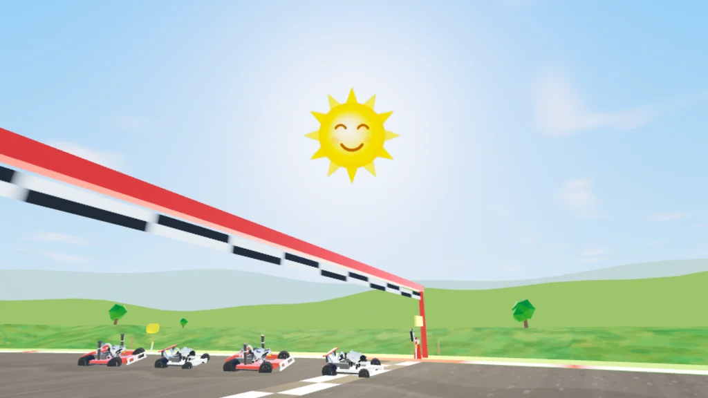
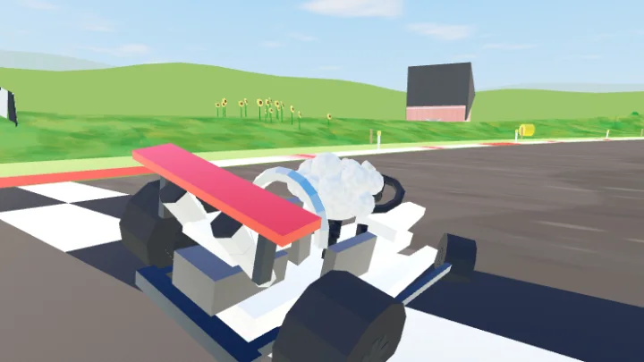
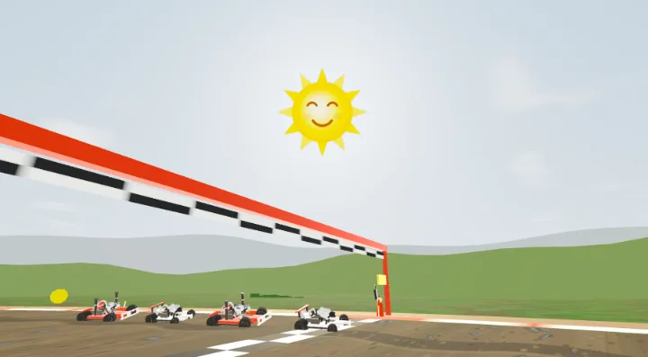
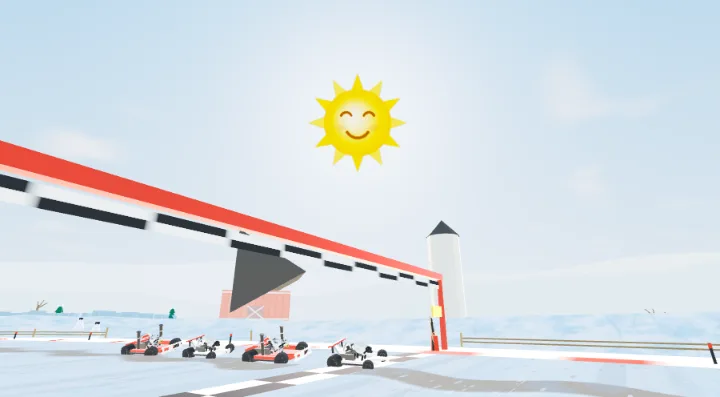
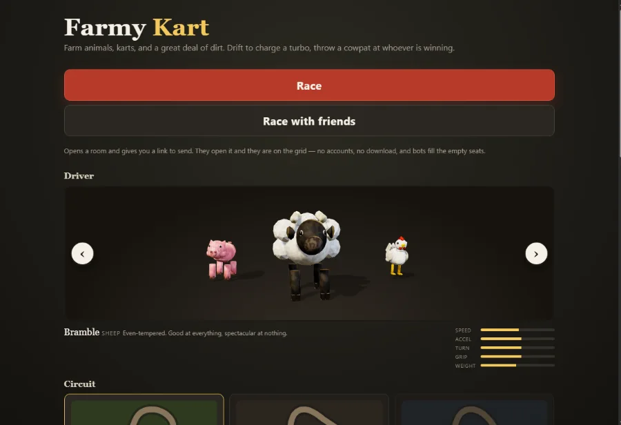

What is in it
- Drift and mini-turbos. Hold drift through a corner and the kart hops into a slide. Charge builds in three tiers while you hold it and pays out as a boost when you let go. The sparks off the rear wheel change colour with the tier, so you can read what you have earned without taking your eyes off the corner exit.
- Eight items. A cowpat to drop, an egg to throw forwards or backwards, a rooster that homes in on the kart ahead, a feed bag for speed, a hay bale that bounces whoever hits it, a scarecrow that blocks one hit, a thunderstorm that squashes everyone in front of you, and a runaway tractor for whoever is last.
- Three circuits. Sunflower Circuit is wide and fast; Muddy Bottom is narrow with two hairpins and a chicane; Frostfield Loop is the old snow farm, where everything slides.
- Four drivers, four handling models. Kettle the chicken is furious off the line and tops out early. Dozer the cow is the fastest thing in the field and will move you out of the way. Truffle the pig holds a slide longer than anyone. Bramble the sheep is good at everything and spectacular at nothing.
- A scoreboard that means something. Position is measured in metres of track, not by who last crossed a trigger, so two karts a metre apart are ordered correctly. Best laps and best finishes are saved per circuit.
- A minimap and a wrong-way warning, a pause that actually pauses, and a results table with every driver's race time and best lap.
What it looks like




Racing your friends
Press Race with friends on the menu and Farmy Kart opens a room and hands you a link. Send it to anyone — they open it and they are in the lobby, picking a driver. No installs, nothing to sign up to before you play, and no server in the middle: the browsers talk to each other directly.
Everybody picks a different animal, because the colour on the minimap and in the standings is how you find yourself in a pack of eight. Bots take any seat nobody claimed, and if somebody closes their laptop halfway round a bot takes over their kart rather than the field silently shrinking — their place, their colour and their lap count all survive. Somebody arriving late is caught up to the race already in progress instead of being made to wait.
How it drives
The handling model carries the kart's velocity separately from where its nose is pointing, and grip is expressed as how fast the tyres can drag one round to meet the other. The angle between the two is the slip angle, and it is the whole game: near zero is a clean racing line, a third of a radian is a committed drift. Nothing about a slide is faked on top of a simpler model, which is why the camera can follow the direction of travel rather than the nose — a drift is something you watch the kart do.
Every rule in the game — the drift tiers, the item table, the lap counter, the bot driver — lives in a shared engine layer that has no rendering code in it at all, so it can be tested outside a browser. The bots hold the same controller a player does. If the handling is unfair to them, it is unfair to you.
The lobby

Controls
Keyboard: arrows or WASD to drive, Shift to drift, Space to jump, E to use an item,
Q to look behind, Escape to pause.
Gamepad: right trigger to accelerate, left stick to steer, a shoulder button to
drift, A to jump.
Touch: hold anywhere on the right to accelerate, slide your left thumb to steer
(slide it down to brake). The bottom-right corner drifts when held and jumps when tapped.
On the grid: start accelerating on the last beat of the countdown for a launch
turbo, the way a kart racer should. Too early and you bog down.
Ready to lose to a chicken?
Play Farmy Kart now